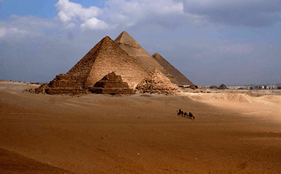
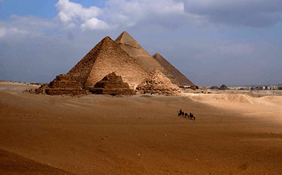

Deserto
Simplesmente um dos ambientes mais difíceis de se viver é aquele com temperaturas extremas, chegando a 40°C durante o dia e -0°C durante a noite, baixa umidade e ventos fortes, além de tempestades frequentes. Mesmo assim, as pessoas conseguiram se adaptar e utilizaram muitos métodos para sobreviver e prosperar nesse ambiente. Podemos ver esse lugar como um lembrete do que pode acontecer com uma floresta e outros ambientes se não houver cautela e ética ambiental na retirada de recursos naturais. A degradação ambiental pode trazer consequências severas para a vida das pessoas e para o ecossistema como um todo.
 
